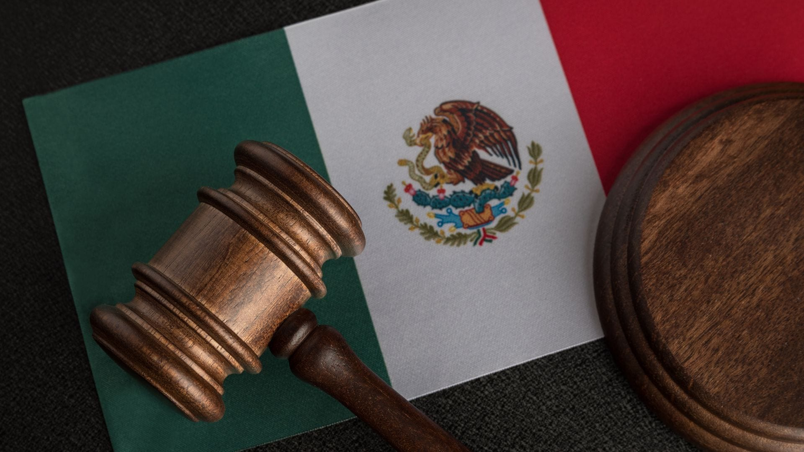

Galería


La izquierda dedicada a los jóvenes se centra en construir una sociedad más equitativa, promoviendo la participación activa de la juventud en la política y en la toma de decisiones. Aboga por políticas que atiendan sus principales preocupaciones, como el acceso a la educación, empleo digno, vivienda asequible y un medio ambiente sostenible. Además, impulsa la igualdad de género, la diversidad y los derechos humanos, reconociendo que los jóvenes son esenciales para enfrentar los desafíos globales y deben tener un papel protagónico en la creación de un futuro más justo.
La consolidación de una nación diversa, equitativa, justa e inclusiva, donde todos los ciudadanos, sin distinción de género, etnia, orientación sexual o condición social, encuentren igualdad de oportunidades para su desarrollo pleno. Buscamos construir una sociedad en la que el bienestar colectivo esté por encima de los intereses individuales, promoviendo la justicia social, la redistribución equitativa de los recursos y el respeto a los derechos humanos. Aspiramos a un país donde la diversidad cultural y social sea un pilar fundamental, y donde el Estado garantice la dignidad y el bienestar de cada persona, asegurando un futuro inclusivo y participativo para todos
Nuestra misión es transformar a México en una nación donde la inclusión, la igualdad sustantiva y el respeto a la diversidad de ideologías sean los cimientos de una sociedad verdaderamente democrática. Trabajamos para garantizar la libertad de expresión y promover una justicia social que permita a todos los ciudadanos vivir en dignidad y con plenas oportunidades. A través de la participación activa de la ciudadanía y el fortalecimiento de un Estado de Derecho, buscamos consolidar una democracia real, con una efectiva división de poderes, en la que el amor a México y el compromiso con su bienestar impulsen el desarrollo equitativo y sostenible del país.